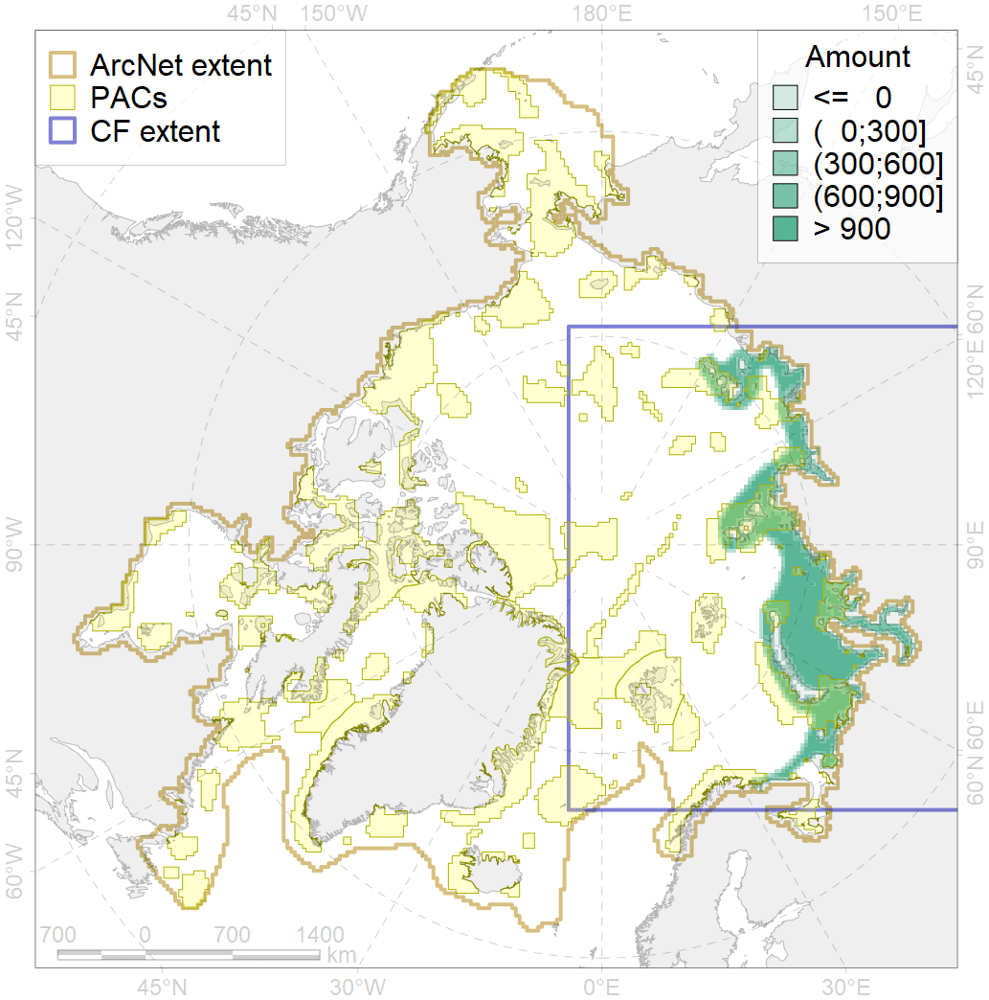
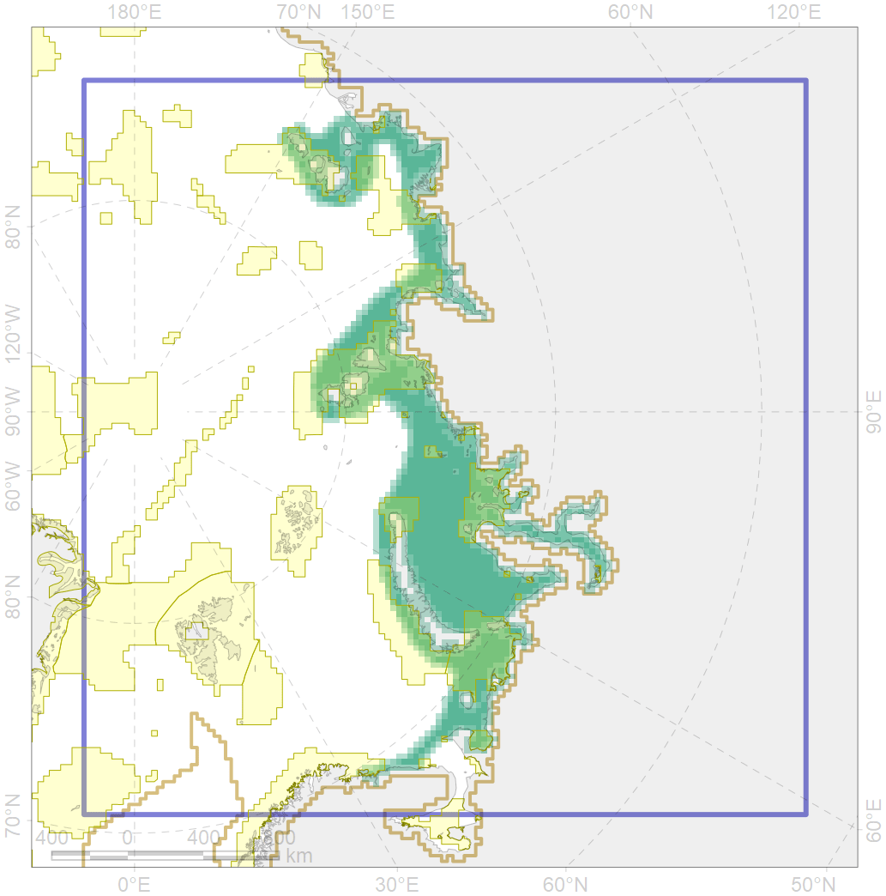

5007

| CF code | 5007 |
| CF name | Beluga of the Barents-Kara-Laptev Sea stock general distribution |
| Time Period | 1956-2017 |
| Source(s) | Glazov et al subm |
| Seasonality | January-December |
| Depth Horizon | 0-600 |
| Methodology | Various |
| Use Restrictions | |
| Author Name | Filatova |
| Notes | |
| Scenario’s Target | 0.24 |
| Target Achievement | 0.358 (Scenario: 149.3%) |
| PAC | Share of the Total Amount within the PAC | Share of the Target Achievement for the ArcNet | PAC’s Contribution to the Target Achievement |
|---|---|---|---|
| 11 | 2.3%2.4% | 9.6%9.6% | 6.4%6.4% |
| 12 | 2.4%2.4% | 8.7%8.9% | 5.8%5.9% |
| 13 | 1.8%1.8% | 7.0%7.0% | 4.7%4.7% |
| 14 | 10.0%10.2% | 37.1%37.4% | 24.8%25.0% |
| 15 | 0.5%0.8% | 1.6%1.9% | 1.1%1.2% |
| 16 | 4.4%4.7% | 17.5%18.1% | 11.7%12.1% |
| 17 | 0.0%0.1% | 0.1%0.3% | 0.1%0.2% |
| 18 | 0.2%0.2% | 0.6%0.7% | 0.4%0.4% |
| 19 | 2.1% | 7.6% | 5.1% |
| 20 | 7.3%7.7% | 29.1%30.4% | 19.5%20.3% |
| 21 | 2.6%2.8% | 9.6%10.4% | 6.4%6.9% |
| 23 | 0.7%0.8% | 2.5%2.8% | 1.7%1.9% |
| 25 | 0.1%0.1% | 0.2%0.2% | 0.1%0.1% |
| 27 | 0.2%0.2% | 0.6%0.8% | 0.4%0.5% |
| inner | 34.6%36.0% | 131.9%135.9% | 88.3%90.9% |
| outer | 65.2%71.0% | 17.3%37.1% | 11.6%24.8% |
| † supplement values are for area consistence whereas principal values are for Accenter compatible gridded stats |